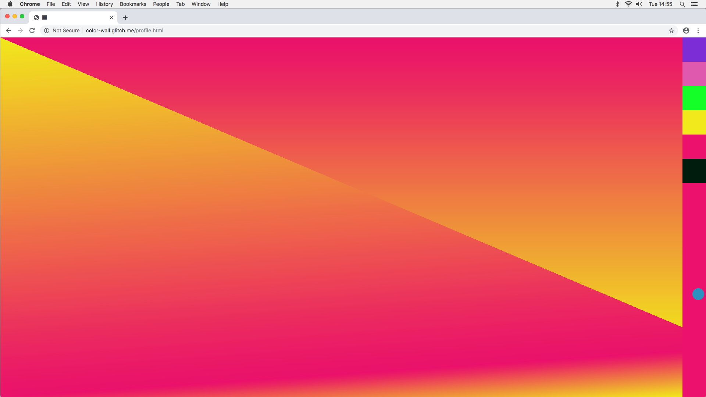
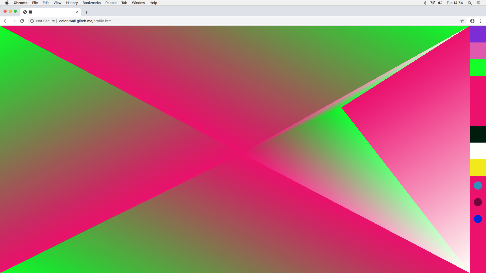
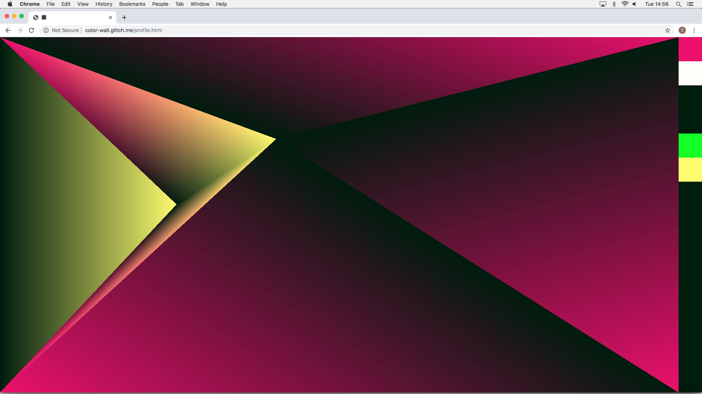
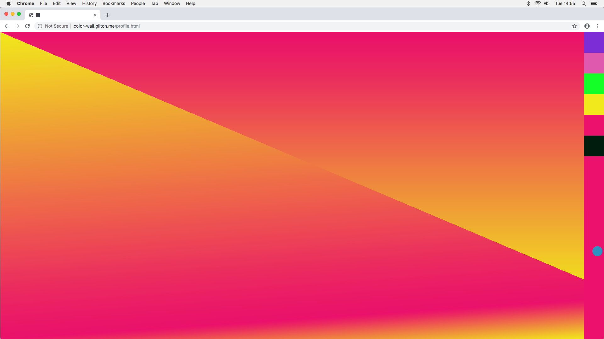
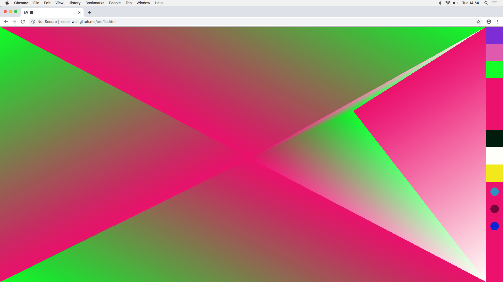
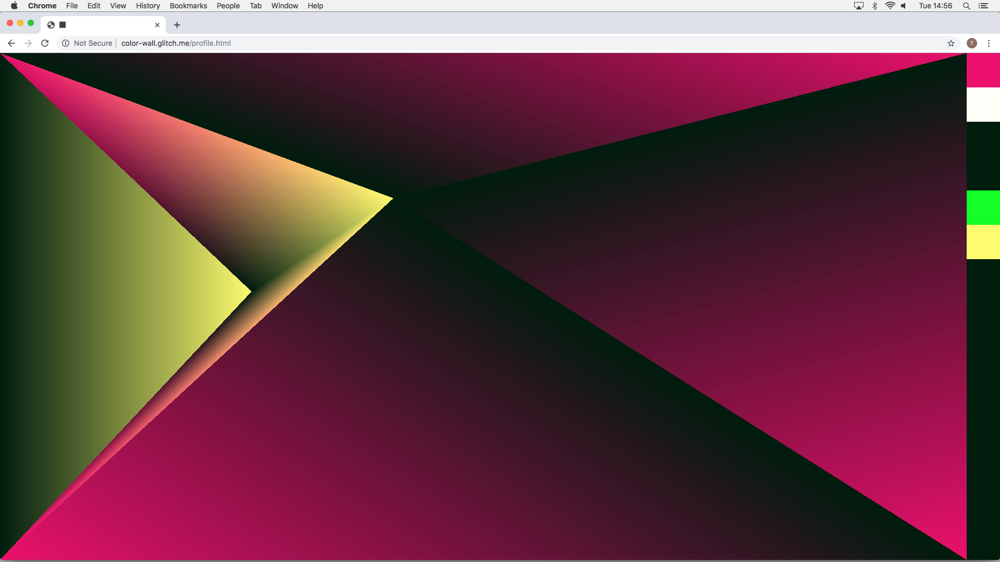

Colorwall was a social experiment. Users made an account, but instead of filling in personal information,
the only thing they could pick was a color. The only information people got from other users was the others
color. There was a list of all the online users visualised by circles on the right side of the screen. The
users could “friend request” another user by clicking a circle. If the other user accepted the friend
request their circle would turn into a square visualising they were friends.
All the online friends will show up on your wall. Combining your own color with that of your friends. The
position of where you show up is determined by the location of your mouse.
I wanted to find out if people would start to make collages together; Only accept friends whose color looked
nice with their own; and unfriend people who didn’t put their mouse is a nice place that worked for their
own collage.
Colorwall
 




